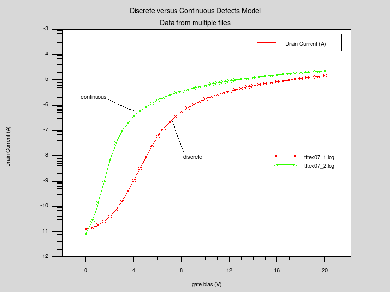
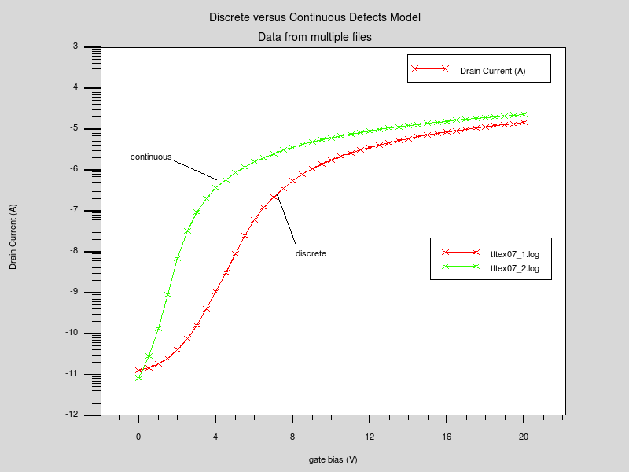
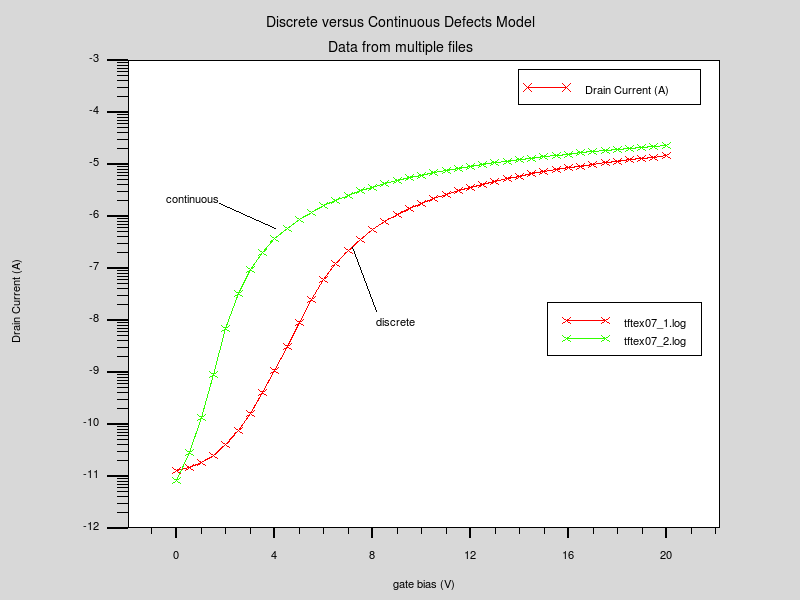

| Requires: | S-Pisces/TFT |
| Minimum Versions: | Atlas 5.26.1.R |

It is possible to specify an energy dependent distribution of traps in two ways using SPISCES/TFT. The original method assumed a discrete set of traps across the bandgap but now it is possible to use a mathematically continuous energy distribution of states.
The syntax used in this example is identical to that in tftex03.in except that now two simulations are performed each with the density of states assumed to contain 24 energy levels across the bandgap. This is speciied using the DEFECT parameters numa and numd . The first simulation is otherwise identical to that described in tftex03.in. The second simulation uses the keyword continuous on the DEFECTS statement to define that the distribution is continuous. The simulation then compares the Id-Vg characteristics for the two simulations.
To load and run this example, select the Load button in DeckBuild > Examples. This will copy the input file and any support files to your current working directory. Select the Run button in DeckBuild to execute the example.